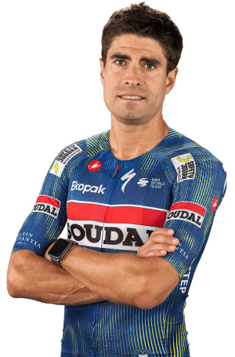

Mikel Landa
Datos Personales
- Mikel Landa Meana
- 13 de diciembre de 1989
- España
- Soudal Quick-Step
- 121

Datos equipos
- Soudal Quick-Step (2024-presente)
- Bahrain Victorious / Bahrain McLaren (2020-2023)
- Movistar Team (2018-2019)
- Team Sky (2016-2017)
- Astana Pro Team (2014-2015)
- Euskaltel-Euskadi (2011-2013)
- Orbea (2009-2010)
Temporada 2025
| Nombre del Dato | Resultado |
|---|---|
| Victorias de etapa | 0 |
| Victorias de clasificación general | 0 |
| Maillots especiales | 0 |
| Podios en etapa | 1 |
| Abandonos | 1 |
| Mejor puesto general | 4.º |
Multimedia
Equipo Soudal Quick-Step en la Vuelta Ciclista a España 2026.